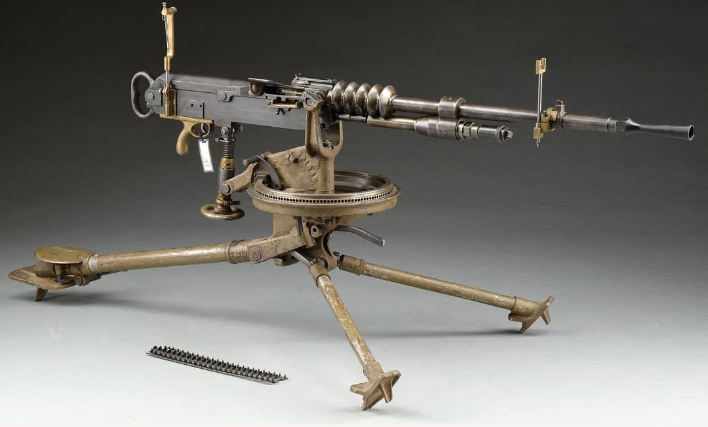

Les armes françaises de la Seconde Guerre mondiale représentent un ensemble varié de modèles issus de plusieurs décennies d’évolution. Entre modernisation rapide, héritage de la Grande Guerre et innovations techniques, l’armement français de 1915 à 1945 reflète une période complexe où coexistent équipements anciens et armes de conception récente.
Cette section du Musée HOP WW2 présente l’ensemble des armes blanches, fusils, pistolets, fusils-mitrailleurs, mitrailleuses et armes d’appui utilisées par les forces françaises durant le conflit. Chaque fiche offre une description détaillée, des photographies, et les éléments permettant d’identifier un modèle authentique.
La Hotchkiss 1914 est l’une des mitrailleuses les plus emblématiques de l’armée française. Conçue avant la Première Guerre mondiale, elle se distingue par sa fiabilité exceptionnelle, son refroidissement par air et son alimentation par bandes rigides métalliques.
En 1939–1940, malgré son âge, elle reste massivement utilisée dans les unités d’infanterie, les troupes coloniales, les formations de réserve et certaines positions fortifiées. Sa robustesse en fait une arme toujours redoutable.

La Hotchkiss 1914 est utilisée massivement durant la Première Guerre mondiale, où elle acquiert une réputation de fiabilité et de résistance. Contrairement à la mitrailleuse Saint‑Étienne, elle ne souffre pas de problèmes mécaniques majeurs.
Durant la Seconde Guerre mondiale, elle reste en service dans de nombreuses unités françaises, notamment dans les troupes coloniales et les formations de réserve. Elle est également utilisée dans certaines positions de la Ligne Maginot.